ggmosaic and Loglinear Models
Michael Friendly
2026-08-12
Source:vignettes/loglinear-models.Rmd
loglinear-models.RmdIntroduction
Mosaic plots are a powerful visualization tool for categorical data, showing the relationships between variables through the sizes of tiles. However, a basic mosaic plot only shows the observed frequencies. To understand whether patterns in the data are statistically meaningful, we need to compare observed frequencies with what we would expect under some model of independence or association.
This is where extended mosaic plots come in. An extended mosaic plot fits a loglinear model to the contingency table and shades the tiles according to the Pearson residuals from that model:
Tiles shaded blue indicate observed frequencies higher than expected (positive association), while red tiles indicate frequencies lower than expected (negative association). The intensity of the color represents the magnitude of the residual.
This approach, pioneered by the vcd package, is now
available in ggmosaic through the expected
parameter in geom_mosaic().
Basic Example: Independence Model
The most common model is complete independence, where we assume no associations among the variables. Let’s explore this with the Titanic data:
data(titanic)
head(titanic)
#> Class Sex Age Survived
#> 1 3rd Male Child No
#> 2 3rd Male Child No
#> 3 3rd Male Child No
#> 4 3rd Male Child No
#> 5 3rd Male Child No
#> 6 3rd Male Child NoSimple Mosaic Plot (No Model)
First, let’s create a basic mosaic plot showing Class by Survival:
print(ggplot(data = titanic) +
geom_mosaic(aes(x = product(Class, Survived), fill = Survived)) +
labs(title = "Titanic: Class by Survival",
subtitle = "Basic mosaic plot") +
theme_mosaic())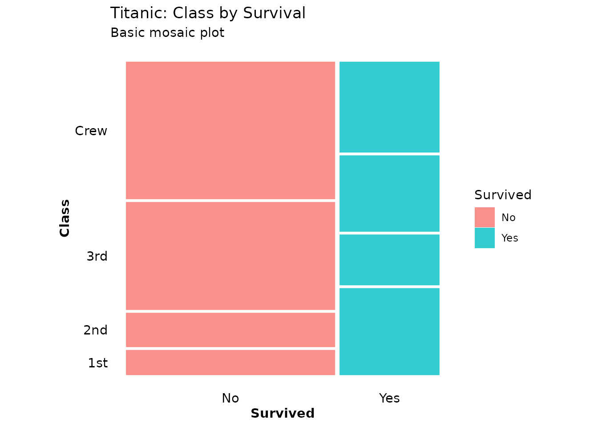
This shows the observed patterns, but we can’t immediately see which differences are statistically meaningful.
Extended Mosaic Plot with Residual Shading
Now let’s add an independence model to see deviations from expected frequencies:
print(ggplot(data = titanic) +
geom_mosaic(aes(x = product(Class, Survived)),
expected = "independence") +
scale_fill_residual() +
labs(title = "Titanic: Class by Survival",
subtitle = "Independence model with residual shading") +
theme_mosaic())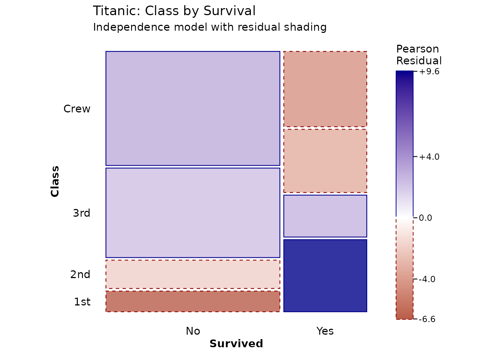
The blue and red shading immediately reveals the pattern: First class passengers had higher survival rates than expected (blue), while crew and third class had lower rates (red).
Model Specification
The expected parameter accepts three types of input:
1. Shortcut Strings
Three convenient shortcuts for common models:
-
"independence"- Complete independence (main effects only) -
"saturated"- Saturated model (all interactions, no residuals) -
"conditional"- Conditional independence given conditioning variables
# Independence model
p1 <- ggplot(data = titanic) +
geom_mosaic(aes(x = product(Class, Sex)),
expected = "independence") +
scale_fill_residual() +
labs(title = "Independence Model",
subtitle = "~ Class + Sex") +
theme_mosaic()
# Saturated model (no residuals - perfect fit)
p2 <- ggplot(data = titanic) +
geom_mosaic(aes(x = product(Class, Sex)),
expected = "saturated") +
scale_fill_residual() +
labs(title = "Saturated Model",
subtitle = "~ Class * Sex") +
theme_mosaic()
print(p1)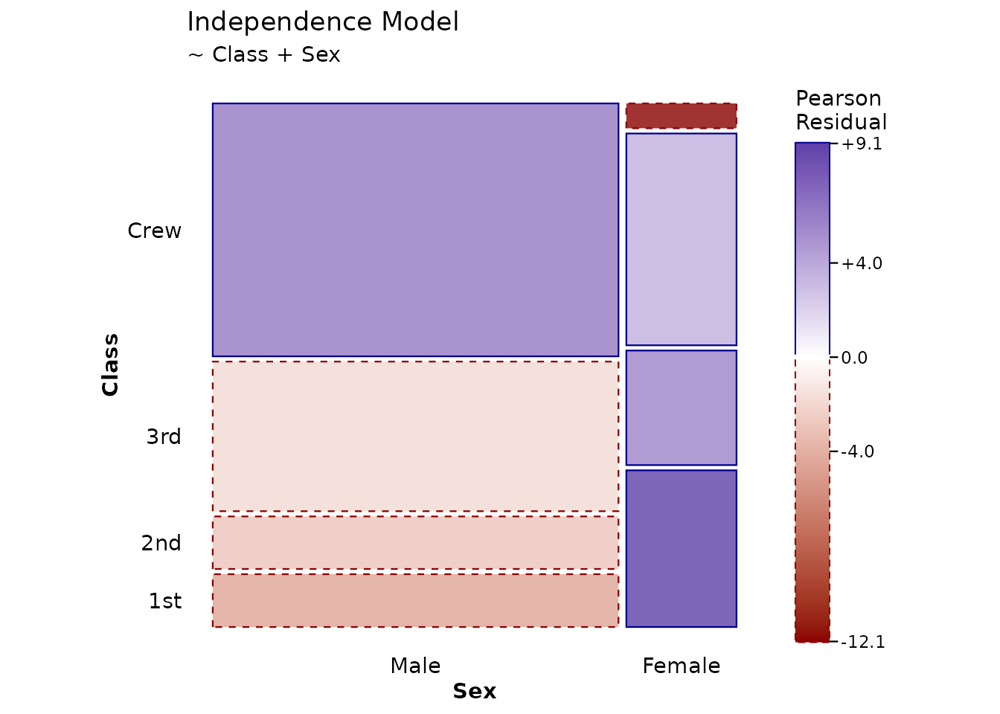
print(p2)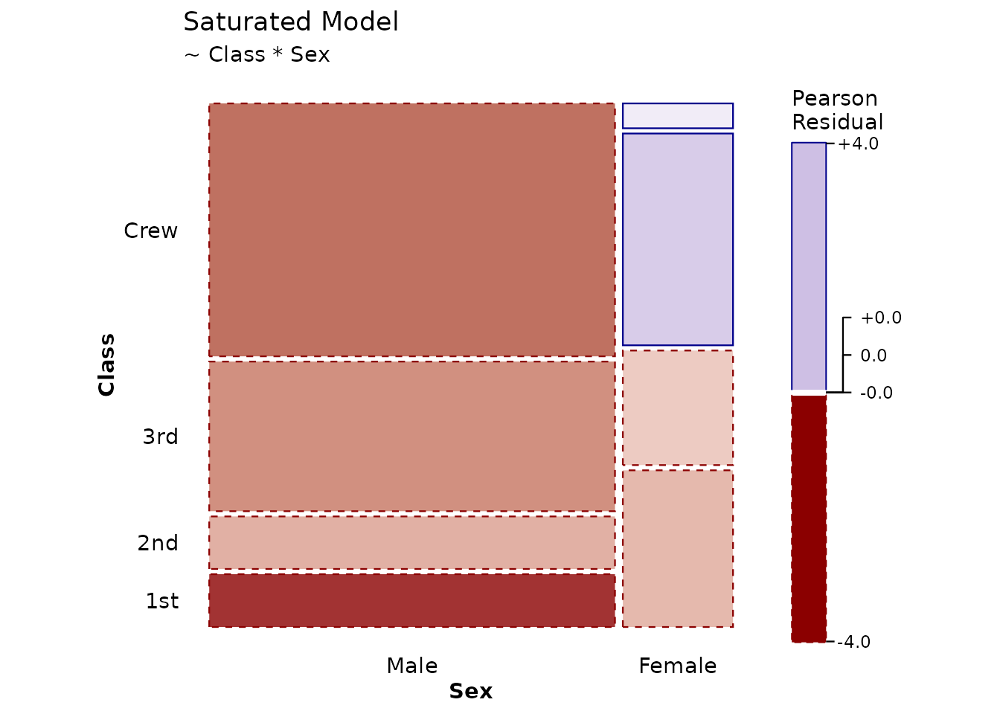
Note that the saturated model shows no shading because it perfectly fits the data (all residuals = 0).
2. Custom Formulas
You can specify custom loglinear models using R’s formula syntax:
# Model with Class + Sex main effects only (no interaction)
print(ggplot(data = titanic) +
geom_mosaic(aes(x = product(Class, Sex, Survived)),
expected = ~ Class + Sex) +
scale_fill_residual() +
labs(title = "Custom Model: Class + Sex",
subtitle = "Testing for Survival associations given Class and Sex") +
theme_mosaic())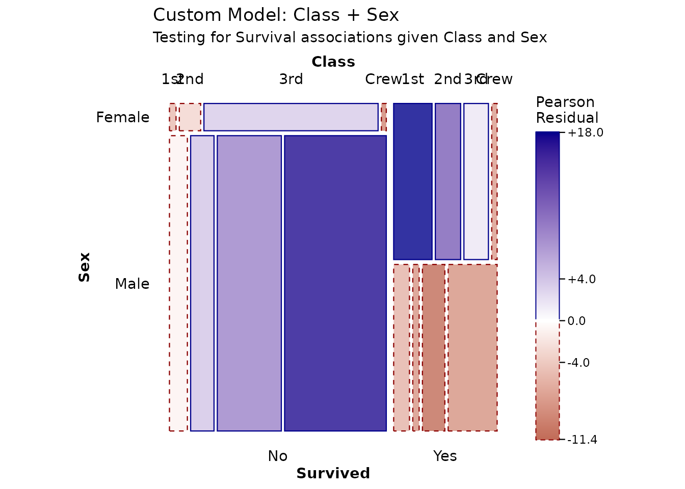
This model asks: “Are there deviations from what we’d expect if Survival were independent of the Class × Sex combinations?”
3. Conditional Independence
When using conditioning variables with conds, the
"conditional" shortcut is particularly useful:
# Conditional independence: Health and Marital Status given Sex
ggplot(data = happy) +
geom_mosaic(aes(x = product(health, marital), conds = sex),
expected = "conditional") +
scale_fill_residual() +
labs(title = "Health × Marital | Sex") +
theme_mosaic()Interpreting Residuals
What Do Residuals Mean?
Pearson residuals follow approximately a standard normal distribution:
- |r| < 2: Not significantly different from expected (white/light shading)
- |r| > 2: Significantly different at α ≈ 0.05 (moderate blue/red)
- |r| > 4: Highly significant (dark blue/red)
Three-Way Tables
Extended mosaic plots are particularly powerful for three-way and higher tables:
print(ggplot(data = titanic) +
geom_mosaic(aes(x = product(Class, Sex, Survived)),
expected = "independence") +
scale_fill_residual() +
labs(title = "Titanic: Complete Independence Model",
subtitle = "Class, Sex, and Survival all independent") +
theme_mosaic())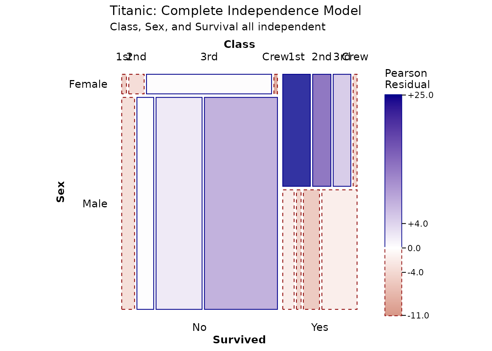
The residuals reveal complex patterns: - First class females had much higher survival (strong blue) - Crew males had lower survival (red) - The independence assumption is clearly violated
Labeling Cells with Values
To make residuals more interpretable, you can display the actual
values in cells using geom_mosaic_text():
Display Observed Counts
print(ggplot(data = titanic) +
geom_mosaic(aes(x = product(Class, Sex), fill = Survived)) +
geom_mosaic_text(aes(x = product(Class, Sex)),
display_values = "observed",
format_digits = 0,
size = 3) +
labs(title = "Observed Frequencies") +
theme_mosaic())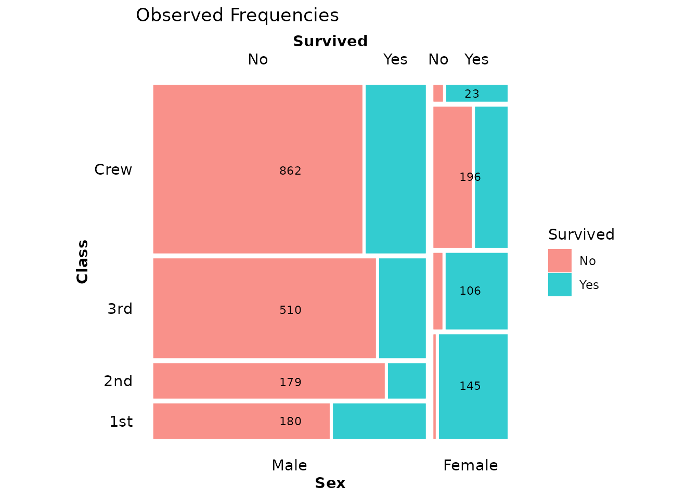
Display Residuals
When using residual shading, it’s helpful to show the actual residual values:
print(ggplot(data = titanic) +
geom_mosaic(aes(x = product(Class, Sex)),
expected = "independence") +
scale_fill_residual() +
geom_mosaic_text(aes(x = product(Class, Sex)),
expected = "independence", # Must match geom_mosaic()
display_values = "residual",
format_digits = 2,
colour = "black",
size = 3) +
labs(title = "Residuals from Independence",
subtitle = "Values show Pearson residuals") +
theme_mosaic())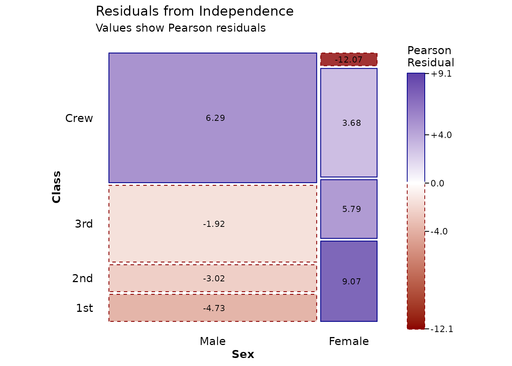
Important: When using
display_values = "residual" or "expected", you
must specify the same expected parameter in both
geom_mosaic() and geom_mosaic_text().
Display Expected Frequencies
You can also show what the model expects:
print(ggplot(data = titanic) +
geom_mosaic(aes(x = product(Class, Survived)),
expected = "independence") +
scale_fill_residual() +
geom_mosaic_text(aes(x = product(Class, Survived)),
expected = "independence",
display_values = "expected",
format_digits = 1,
colour = "black",
size = 3.5) +
labs(title = "Expected Frequencies Under Independence") +
theme_mosaic())The Four Display Options
The display_values parameter in
geom_mosaic_text() accepts:
-
"label"(default) - Factor level labels -
"observed"- Observed counts from the data -
"expected"- Expected values from the fitted model -
"residual"- Pearson residuals
Customizing the Color Scale
The scale_fill_residual() function provides a diverging
color scale centered at zero. You can customize it:
print(ggplot(data = titanic) +
geom_mosaic(aes(x = product(Class, Sex)),
expected = "independence") +
scale_fill_residual(
low = "firebrick",
mid = "white",
high = "steelblue",
limits = c(-6, 6), # Set symmetric limits
name = "Pearson\nResidual"
) +
geom_mosaic_text(aes(x = product(Class, Sex)),
expected = "independence",
display_values = "residual",
format_digits = 1,
size = 3) +
labs(title = "Custom Color Scale") +
theme_mosaic())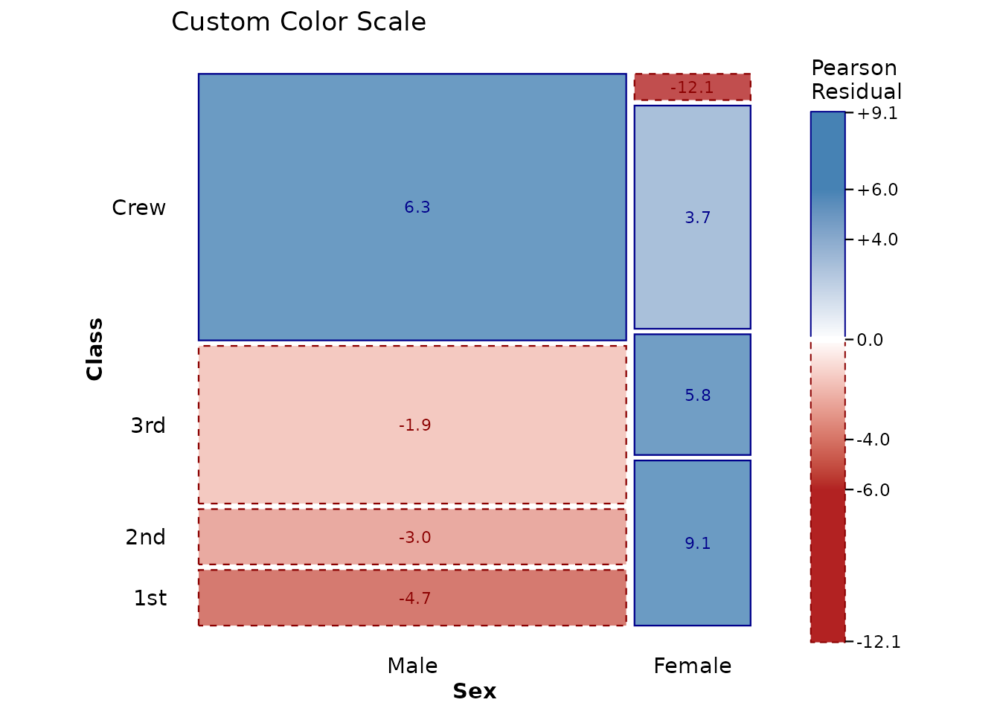
You can also use any ggplot2 diverging scale:
print(ggplot(data = titanic) +
geom_mosaic(aes(x = product(Class, Survived)),
expected = "independence") +
scale_fill_gradient2(
low = "purple",
mid = "gray95",
high = "orange",
midpoint = 0,
name = "Residual"
) +
labs(title = "Custom ggplot2 Scale") +
theme_mosaic())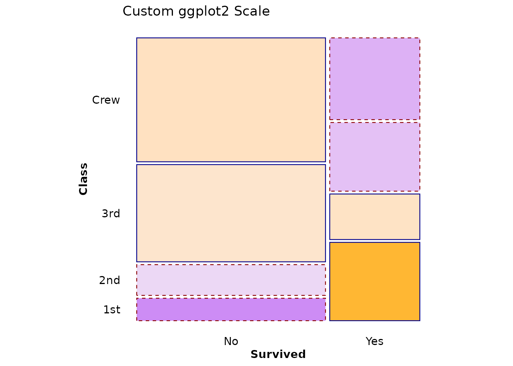
Text Aesthetics
All standard ggplot2 text aesthetics work with
geom_mosaic_text():
print(ggplot(data = titanic) +
geom_mosaic(aes(x = product(Class, Survived)),
expected = "independence") +
scale_fill_residual() +
geom_mosaic_text(aes(x = product(Class, Survived)),
expected = "independence",
display_values = "residual",
format_digits = 2,
size = 4, # Text size
colour = "white", # Text color
fontface = "bold", # Font weight
family = "serif") + # Font family
labs(title = "Custom Text Aesthetics") +
theme_mosaic())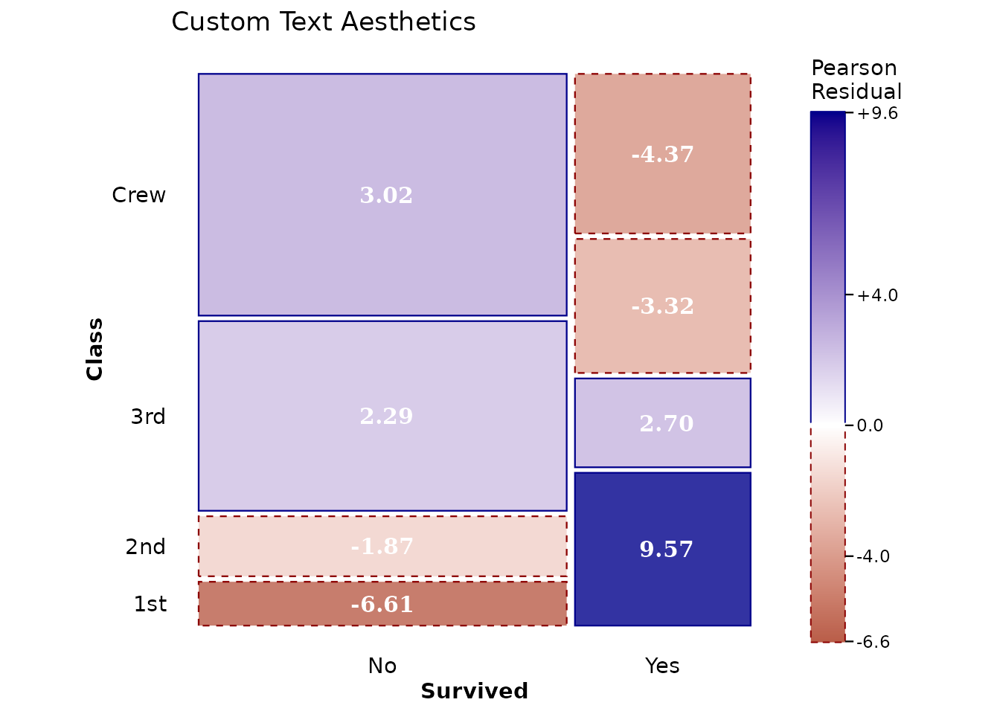
Available text parameters: - size (default: 2.7) -
colour/color - fontface: “plain”,
“bold”, “italic”, “bold.italic” - family: Font family name
- angle: Rotation angle in degrees - hjust,
vjust: Justification (0-1) - lineheight: For
multi-line text
Complete Example: Comparing Models
Let’s compare three different models for the same data:
# 1. Independence of all three variables
p1 <- ggplot(data = titanic) +
geom_mosaic(aes(x = product(Class, Sex, Survived)),
expected = "independence") +
scale_fill_residual(limits = c(-10, 10)) +
geom_mosaic_text(aes(x = product(Class, Sex, Survived)),
expected = "independence",
display_values = "residual",
format_digits = 1,
size = 2.5) +
labs(title = "Complete Independence",
subtitle = "~ Class + Sex + Survived") +
theme_mosaic()
# 2. Survival independent of Class and Sex jointly
p2 <- ggplot(data = titanic) +
geom_mosaic(aes(x = product(Class, Sex, Survived)),
expected = ~ Class + Sex) +
scale_fill_residual(limits = c(-10, 10)) +
geom_mosaic_text(aes(x = product(Class, Sex, Survived)),
expected = ~ Class + Sex,
display_values = "residual",
format_digits = 1,
size = 2.5) +
labs(title = "Survival Independent of Class × Sex",
subtitle = "~ Class + Sex (no Survived interaction)") +
theme_mosaic()
# 3. Class and Sex independent, both related to Survival
p3 <- ggplot(data = titanic) +
geom_mosaic(aes(x = product(Class, Sex, Survived)),
expected = ~ Class + Sex + Survived + Class:Survived + Sex:Survived) +
scale_fill_residual(limits = c(-10, 10)) +
geom_mosaic_text(aes(x = product(Class, Sex, Survived)),
expected = ~ Class + Sex + Survived + Class:Survived + Sex:Survived,
display_values = "residual",
format_digits = 1,
size = 2.5) +
labs(title = "Class ⊥ Sex | Survival",
subtitle = "~ Class + Sex + Survived + Class:Survived + Sex:Survived") +
theme_mosaic()
print(p1)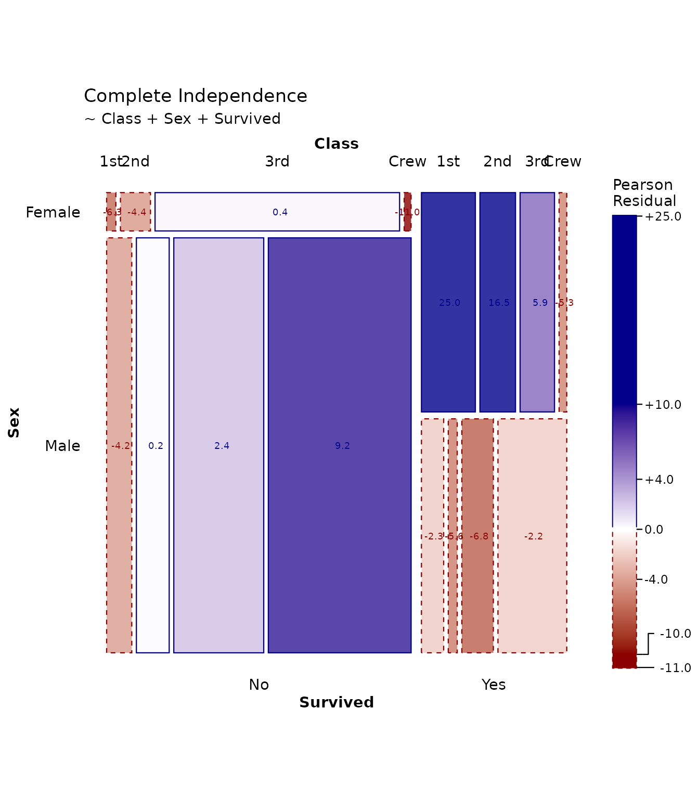
print(p2)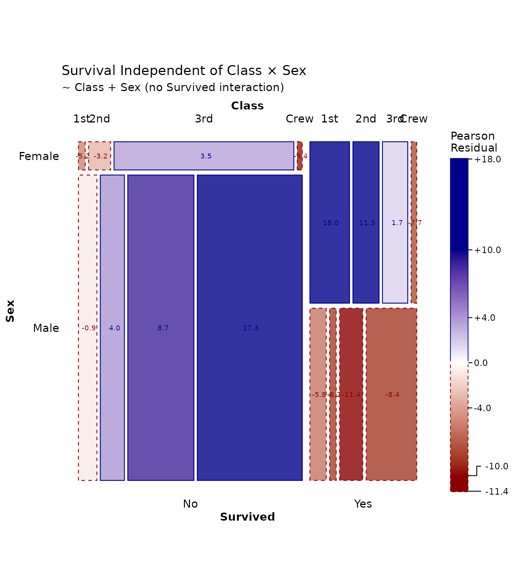
print(p3)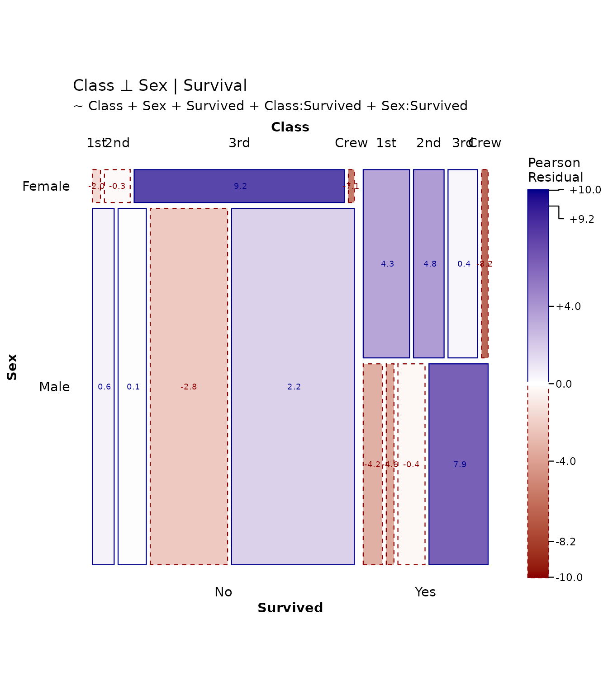
Each model tells a different story about the associations in the data.
References
- Friendly, M. (1994). “Mosaic Displays for Multi-Way Contingency Tables.” Journal of the American Statistical Association, 89(425), 190-200.
- Hartigan, J. A., & Kleiner, B. (1981). “Mosaics for Contingency Tables.” Computer Science and Statistics: Proceedings of the 13th Symposium on the Interface, 268-273.
- Meyer, D., Zeileis, A., & Hornik, K. (2006). “The Strucplot Framework: Visualizing Multi-way Contingency Tables with vcd.” Journal of Statistical Software, 17(3), 1-48.
- Zeileis, A., Meyer, D., & Hornik, K. (2007). “Residual-based Shadings for Visualizing (Conditional) Independence.” Journal of Computational and Graphical Statistics, 16(3), 507-525.
Session Info
sessionInfo()
#> R version 4.6.1 (2026-06-24)
#> Platform: x86_64-pc-linux-gnu
#> Running under: Ubuntu 24.04.4 LTS
#>
#> Matrix products: default
#> BLAS: /usr/lib/x86_64-linux-gnu/openblas-pthread/libblas.so.3
#> LAPACK: /usr/lib/x86_64-linux-gnu/openblas-pthread/libopenblasp-r0.3.26.so; LAPACK version 3.12.0
#>
#> locale:
#> [1] LC_CTYPE=C.UTF-8 LC_NUMERIC=C LC_TIME=C.UTF-8
#> [4] LC_COLLATE=C.UTF-8 LC_MONETARY=C.UTF-8 LC_MESSAGES=C.UTF-8
#> [7] LC_PAPER=C.UTF-8 LC_NAME=C LC_ADDRESS=C
#> [10] LC_TELEPHONE=C LC_MEASUREMENT=C.UTF-8 LC_IDENTIFICATION=C
#>
#> time zone: UTC
#> tzcode source: system (glibc)
#>
#> attached base packages:
#> [1] stats graphics grDevices utils datasets methods base
#>
#> other attached packages:
#> [1] dplyr_1.2.1 ggmosaic2_0.5.0 ggplot2_4.0.3
#>
#> loaded via a namespace (and not attached):
#> [1] gtable_0.3.6 jsonlite_2.0.0 compiler_4.6.1 Rcpp_1.1.2
#> [5] tidyselect_1.2.1 tidyr_1.3.2 jquerylib_0.1.4 productplots_0.1.2
#> [9] systemfonts_1.3.2 scales_1.4.0 textshaping_1.0.5 yaml_2.3.12
#> [13] fastmap_1.2.0 plyr_1.8.9 R6_2.6.1 labeling_0.4.3
#> [17] generics_0.1.4 knitr_1.51 htmlwidgets_1.6.4 ggrepel_0.9.8
#> [21] tibble_3.3.1 desc_1.4.3 bslib_0.12.0 pillar_1.11.1
#> [25] RColorBrewer_1.1-3 rlang_1.3.0 cachem_1.1.0 xfun_0.60
#> [29] fs_2.1.0 sass_0.4.10 S7_0.2.2 otel_0.2.0
#> [33] viridisLite_0.4.3 plotly_4.12.1 cli_3.6.6 pkgdown_2.2.1
#> [37] withr_3.0.3 magrittr_2.0.5 digest_0.6.39 grid_4.6.1
#> [41] lifecycle_1.0.5 vctrs_0.7.3 data.table_1.18.4 evaluate_1.0.5
#> [45] glue_1.8.1 farver_2.1.2 ragg_1.5.2 purrr_1.2.2
#> [49] httr_1.4.8 rmarkdown_2.31 tools_4.6.1 pkgconfig_2.0.3
#> [53] htmltools_0.5.9